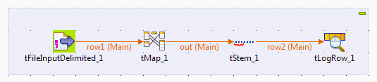
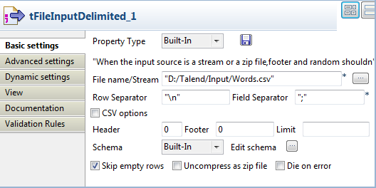
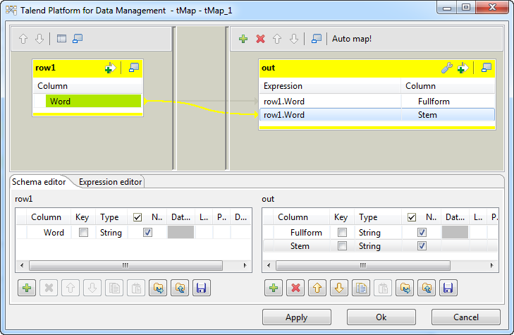
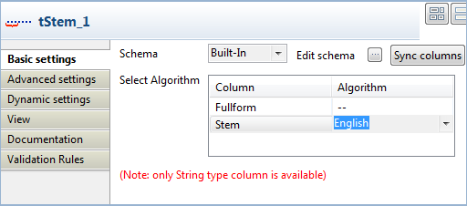
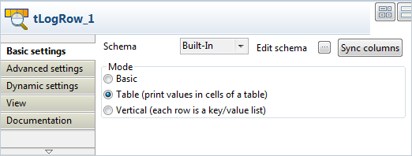

Warning
This component will be available in the Palette of the studio on the condition that you have subscribed to any Talend Platform product.
|
Component family |
Data quality | |
|
Function |
tStem standardizes data in columns through the process of linguistic normalization, in which the variant forms of a word are reduced to a common form. | |
|
Purpose |
tStem enables to standardize data in columns before matching this data. | |
|
Basic settings |
Schema and Edit schema |
A schema is a row description, i.e., it defines the number of fields that will be processed and passed on to the next component. The schema is either built-in or remote in the Repository. |
|
|
|
Built-in: You create the schema and store it locally for this component only. Related topic: see Talend Data Integration Studio User Guide. |
|
|
|
Repository: You have already created the schema and stored it in the Repository. You can reuse it in various projects and job designs. Related topic: see Talend Data Integration Studio User Guide. |
|
|
Select Algorithm |
Set a stemming algorithm for each analyzed column of the type string. Column: list of the analyzed column. Algorithm: Select from the list the algorithm language you want to check the column data against. |
|
Advanced settings |
tStatCatcher Statistics |
Select this check box to collect log data at the component level. |
|
Usage |
This component is an intermediary step. It requires an input flow as well as an output. | |
|
Limitation |
n/a | |
This basic scenario describes a four-component Job that reads a list of English words from a one-column delimited file, extracts the stems of the words, and displays both the list of words and the corresponding stems on the Run console.
Drop the following components from the Palette onto the design workspace: tFileInputDelimited, tMap, tStem, and tLogRow.
Link the tFileInputDelimited component to the tMap component using a Row > Main connection.
Link the tMap component to the tStem component using a Row > Main connection, and give the output row connection a name, out in this example.
Link the tStem component to the tLogRow component using a Row > Main connection.

Double-click the tFileInputDelimited component to open its Basic settings view.
Browse to the input file, and set basic properties based on the structure of the input file. In this example, the input file provides a list of English words in different variant forms, and does not have a header. The following is an exact of the file content.
computerize computerized computerizing program programming cooking cooked cooks evaporable
Click the [...] button next to Edit schema to open the [Schema] dialog box, and set the input schema, which should contain one column named Word in this example.

When done, click OK to close the dialog box.
Double-click the tMap component to open the map editor. We will use this component to map the single-column input flow to a two-column data flow to feed the tStem component.
Click the [+] button to add two columns to the output schema and name them Fullform and Stem respectively. Then, drag the Word column from the input table onto the Fullform column, then onto the Stem column, in the output table.
When done, click OK to close the map editor and propagate the changes to the next component.
Double-click the tStem component to open its Basic settings view.
In the Select Algorithm table, click in the Algorithm field for the Stem column, which will carry the word stems extracted from the input data, and select English as the algorithm language.
Double-click the tLogRow component to open its Basic settings view, and select the Table option for better readable display of the Job execution result.


This scenario describes a six-component Job that carries out linguistic normalization on data in the translation column and extract the base part (word stem) of all English words.
The aim of this Job is to create a kind of dictionary of stems of the English words listed in the translation column. This dictionary may be used at a later stage in order to check new words to be put in the selected table. The extracted English stems are written in an output file along with the number of their occurrences in the translation column.
In this scenario, we have already stored the main input schema in the Repository. For more information about storing schema metadata in the Repository, see Talend Data Integration Studio User Guide.
The main input table contains eight columns: id_key, id_lang, translation, id_status, id_user_trans, id_user_validate, id_editor and date. We want to extract the stem of the English words in the translation column.
In the Repository tree view, expand Metadata - DB Connections where you have stored the main input schema and drop the relevant file onto the design workspace.
The [Components] dialog box displays with the corresponding component selected by default.

Click OK to drop the tMysqlInput component onto the workspace.
The input table used in this scenario is called translation. It holds several columns including the translation column that holds the English words we want to stem.
Drop the following components from the Palette onto the design workspace: tNormalize, tFilterRow, tStem, tAggregateRow and tFileOutputExcel.
Connect the component together using the Main links with the exception of the tFilterRow - tStem connection that should use a Filter link.

Double-click the main input database component to display its Basic settings views.

The property fields for tMysqlInput are automatically filled in. If you do not define your input schema locally in the Repository, fill in the details manually after selecting Built-in in the Schema and Property Type fields.
If required, modify the query in the Query box.
In this example, we want to work only on the English words and this is why the
id_langis set to1.
Double-click tNormalize to display its Basic settings view and define the component properties.

From the Column to normalize list, select translation.
This will split the data strings in the translation column into words.
In the Item separator field, enter the separator which will delimits data in the translation column, a space character in this example.
Double-click tFilterRow to display its Basic settings view and define the component properties.

Select the logical operator you want to use in order to combine simple filtering and advanced mode.
In the Conditions area, click the plus button to add one or more conditions to the output flow. And then in the corresponding table column:
select the input column you want to operate on,
select the needed function on the list,
select the operator to bind the input column with the value,
type in the value for content filtering.
In this example, we want to filter all words in the translation column that have less than three letters.
Double-click tStem to display its Basic settings view and define the component properties.

In the Select Algorithm area, click in the Algorithm cell that corresponds to the translation column. And then select from the list the algorithm language you want to check the column data against, English in this scenario.
Double-click tAggregateRow to display its Basic settings view and define the component properties.

Click the [...] button next to Edit schema to open a dialog box. Here you can define the output flow.

In the output flow to the right of the dialog box, click the plus button to add as many columns as you need in the output flow.
In this example, we want to have two output columns, the translation column and a new output column called count.
When done, click OK to close the dialog box and proceed to the next step.
In the tAggregateRow basic settings view and in the Group by area, click the plus button to add an many lines as needed. Here you can define the group-by values.
Click in the Output column line and select the output column that will hold the aggregated data, the translation column in this example.
Click in the Input column position line and select the input column from which you want to collect the values to be aggregated, the translation column in this example.
In the Operations area, click the plus button to add lines for the columns that will hold the aggregated data. Here you can define the calculation values.
Click in the Output column line and select the destination column from the list, the translation column in this example.
Click in the Function column line and select any of the listed operations.
In this example, we want to count the number of distinct stems to be listed only once in the output column.
Click in the Input column position line and select the input column from which you want to collect the values to be aggregated, the id_key column in this example.
Double-click tFileOutputExcel to display its Basic settings view and define the component properties.

Set the destination file path and define the settings of the file according to your needs.